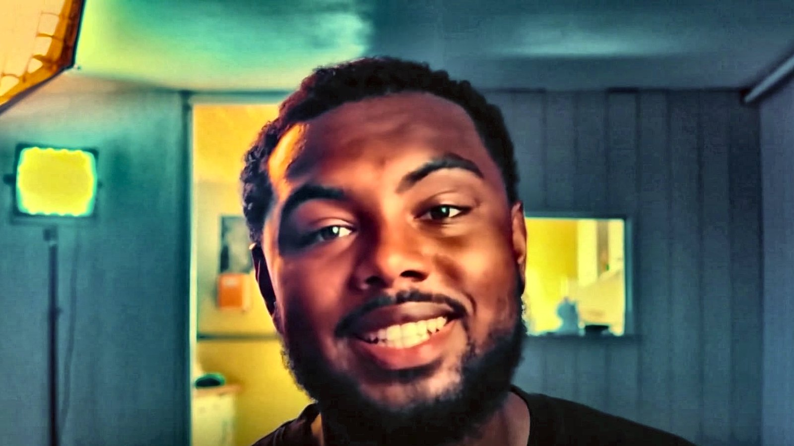

Pour le cadre ou le diplômé qui veut enfin sa liberté
+ Si Tu N'as Pas Fait 5,000 Euros Sur Les 90Prochains Jours, Je Te Rembourse (sur contrat)
+83 résultats clients

Le module de réservation ne s'affiche pas ? Ouvre le formulaire ici
Vos informations servent uniquement à organiser l'appel. Elles ne sont ni vendues ni cédées. Politique de confidentialité.
C'est le cas de la quasi totalité des gens que j'accompagne. Le plan est construit autour d'un emploi du temps de salarié, sur les soirées et une partie du week end. On fixe le rythme réel pendant l'appel, pas un rythme théorique.
Oui, c'est même le point de départ le plus fréquent. Aucune compétence technique n'est demandée au démarrage. Ce qui compte, c'est de suivre le plan dans l'ordre et de tenir le rythme fixé.
Un point en direct, sans présentation ni diaporama. On regarde ta situation, ce que tu peux dégager comme temps, et si la méthode est adaptée à ton cas. Si ce n'est pas adapté, je te le dis pendant l'appel.
Tu appliques le plan et tu fournis tes livrables sur les 90 jours. Si le résultat n'est pas là au 90e jour, tu récupères ton investissement. Les conditions exactes sont dans le contrat signé avant le démarrage, et résumées dans les mentions légales.
Tu appliques le plan, tu tiens le rythme fixé pendant l'appel. Si le résultat n'est pas là au 90e jour, tu récupères ton investissement, sur contrat.
Qui te parle
À 16 ans, je vendais des parfums.
À 17 ans, je me suis mis à mon compte. Pas par passion de l'entrepreneuriat. Parce qu'il y avait une famille derrière moi et que je n'avais pas le luxe d'attendre.
Ensuite, la coiffure. Des journées de 13 à 15 heures, presque tous les jours. La plus longue, 19 heures. Je ne raconte pas ça pour la médaille. Je le raconte parce que j'y croyais vraiment : je pensais qu'en travaillant plus que tout le monde, ça finirait forcément par payer.
Ça a payé, un temps. Puis j'ai vu ce que je m'étais construit.
Une prison. Le jour où je m'arrêtais, tout s'arrêtait. Pas de fauteuil, pas de client. Pas de client, pas d'argent. Mon seul levier, c'était d'ajouter des heures à des journées qui n'en avaient plus.
Ce qui m'en a sorti, je ne l'ai pas appris dans une formation. Je l'avais sous les yeux tous les jours, et j'ai mis des années à le voir.
J'ai coiffé des milliers de personnes. Des patrons, des pères de famille, des gens qui avaient réussi, d'autres qui ramaient. Une heure assis, à parler pour de vrai. Et à force, la même chose revenait chez tout le monde.
Personne ne décide avec de la logique. Les gens avancent quand ils se sentent compris.
Ce jour-là j'ai compris que ce qui me manquait, ce n'était pas de travailler plus. C'était de savoir aller chercher des clients. Cette compétence-là, personne ne me l'avait apprise. Et c'est la seule qui m'a sorti du fauteuil.
Cette compétence m'a fait entrer dans des pièces où je n'avais rien à faire. Des gens qui sont parmi les meilleurs au monde dans leur domaine, avec des contrats chez LVMH. La 5e plus grosse famille du Portugal. Des types devenus des amis, dont les sociétés font plus de 100 millions par an. Des gens qui possèdent des domaines.
Ce que j'y ai appris n'a rien à voir avec le décor. Je n'avais pas un problème de quantité de travail. J'avais un problème d'endroit où je le mettais. Mon énergie, mon temps, mon argent : je les posais là où ça ne rapportait rien. Personne ne me l'avait jamais dit, il a fallu que je le voie.
Aujourd'hui je donne ça à des gens qui ont un vrai diplôme, de vraies compétences, et pas la moindre idée de comment trouver leur premier client.
Le reste, je préfère te le raconter en direct. C'est plus honnête, et tu pourras me couper